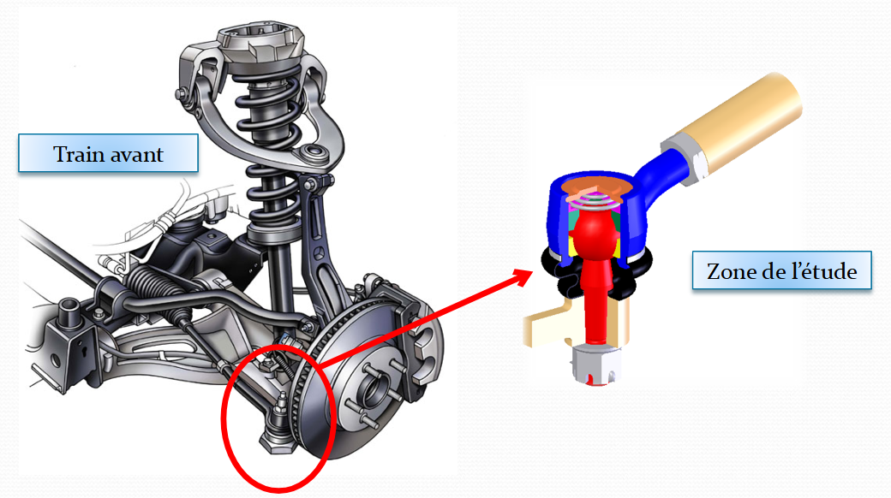
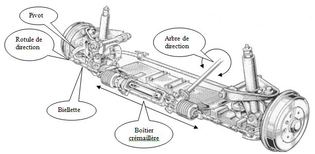
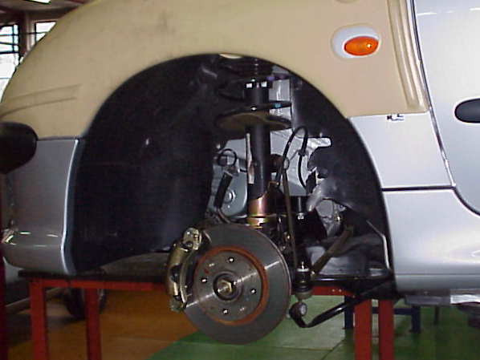
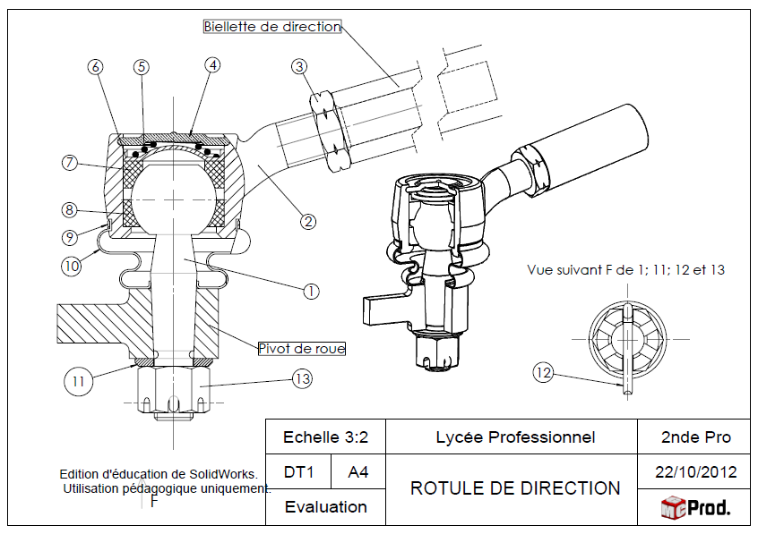

Mise en situation

La rotule de direction présentée dans cette séance est un composant utilisé dans les systèmes de direction des véhicules.
Les rotules de direction assurent l’articulation sphérique entre la roue et la crémaillère de direction
Une rotule de direction fonctionne comme une articulation dont le rôle principal est de faire tourner les roues du véhicule.
De plus, elle va aider à absorber les chocs de votre véhicule lors de vos trajets en fonctionnant avec les rotules de suspension.
Fonctionnement
Le conducteur fait tourner l’arbre de direction solidaire du volant.
Le boîtier crémaillère transforme ce mouvement de rotation en mouvement de translation.
Ce mouvement de translation permet d’actionner les pivots de direction par l’intermédiaire des biellettes et des rotules de direction.

Problématique
Un client se présente dans votre garage suite au passage du contrôle technique de son véhicule. Ce dernier, une Peugeot 206 présente du jeu sur la rotule de direction gauche, vous êtes donc amené à la changer.

Défauts constatés lors d’un contrôle technique :
- Jeu excessif et/ou détérioration importante (obligation de contre-visite)
- Protection défectueuse (soufflets abimés)
- Mauvaise fixation (obligation de contre-visite)
Elles sont en général changées par paire. Le changement des rotules de suspension fait partie des opérations d'entretien classiques de votre auto.
Avec le temps celles-ci peuvent soit prendre du jeu, soit au contraire se gripper si on a oublié de les graisser ou si l'eau a pénétré par un soufflet détérioré.
Dessin d'ensemble
